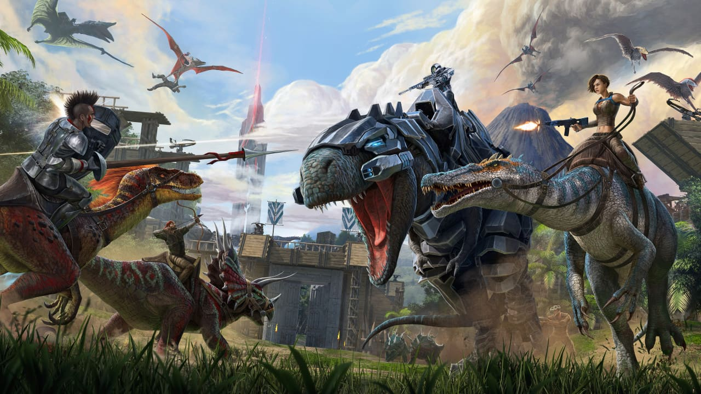
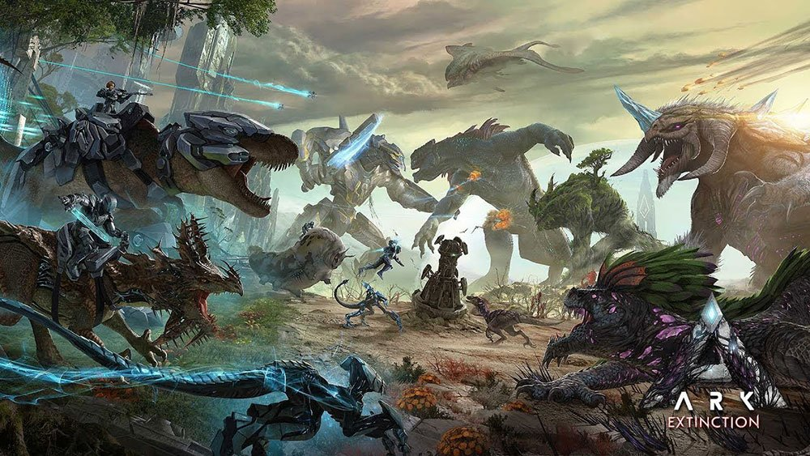
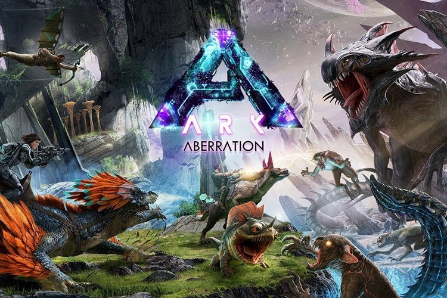
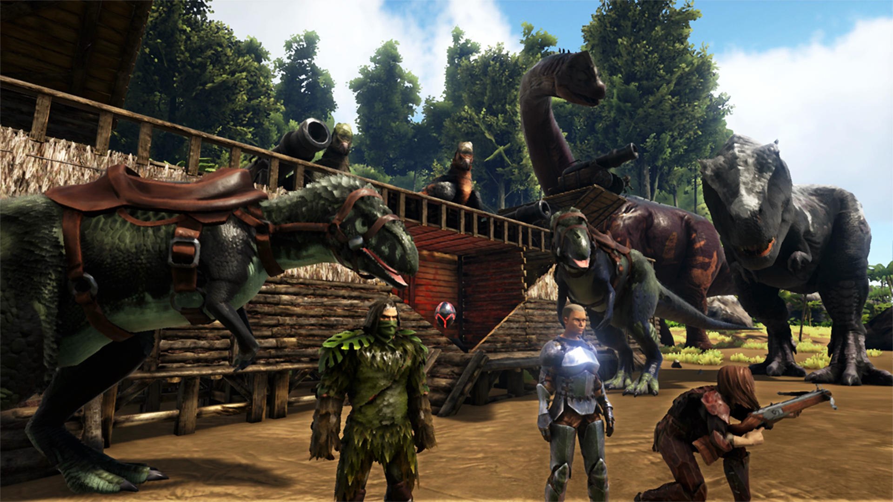
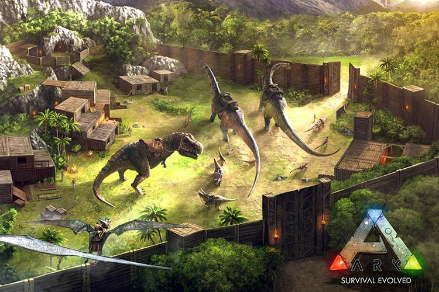

Ark: Survival Evolved

ARK: Survival Evolved برای اولین بار در سال 2017 برای کنسولهای PlayStation، Xbox و همچنین هر سه سیستم عامل کامپیوترهای شخصی یعنی ویندوز، لینوکس و مک منتشر شد.
این بازی در سبک ماجراجویی اول شخص است و شما مثل تمام عناوین Survival، همچون Into the dead، تنها یک وظیفه دارید و آن چیزی نیست جز زنده ماندن. اما همین وظیفه زنده ماندن در دنیای پر از دایناسورهای عظیم الجثه بسیار چالش برانگیز خواهد بود.
در سال 2018 ARK: Survival Evolved برای اندروید، آی او اس و نیتندو سوییچ هم منتشر شد و حالا میتوانید ARK: Survival Evolved روی هر دستگاهی با هر سیستم عاملی بازی کنید.

دست خالی در مقابل تیرانوسوروس
همانطور که پیش از این گفته شد زنده ماندن در دنیای ARK: Survival Evolved که پر از دایناسور است کار آسانی نخواهد بود. در ابتدای بازی شما تنها چیزی که برای مقابله با دشمنان دارید دستهایتان است و تقریبا در مقابل هر دایناسوری شکست خواهید خورد پس باید از درگیر شدن با دایناسورها اجتناب کنید.
در ابتدای بازی همه چیز کمی برایتان گنگ است. ARK: Survival Evolved مثل بازی Miami crime simulator دنیای آزاد است و نقشه بزرگی هم دارد. شاید یکی از بزرگترین نقشهها در بین بازیهای موبایلی متعلق به ARK: Survival Evolved باشد. در نتیجه گشت و گذار در این دنیا طولانی و لذت بخش و البته در ابتدا کمی گنگ خواهد بود.
اما به مرور شما با بازی اخت خواهید گرفت. با جمع آوری سنگ و چوب سلاح میسازید و برای ادامه دادن به بقای خود در دنیای بزرگ و بی رحم ARK: Survival Evolved وقف پیدا خواهید کرد.
توجه کنید که جدای از سلاح شما باید غذا هم جمع آوری کنید تا بتوانید به زنده ماندن خود ادامه دهید.


دایناسور کشی آنلاین
به مرور زمان و پیشرفت در بازی میتوانید با قویترین دایناسورها هم مبارزه کنید و آن ها را شکست دهید. حتی میتوانید آنها را تحت سلططه خود درآورید و از آنها سواری بگیرید. چه چیزی لذت بخش تر از پرواز با یک دایناسور.
تعداد دایناسورهای موجود در ARK: Survival Evolved بسیار متنوع و زیاد است و با توجه به مساحت بزرگ نقشه بازی چیزهای زیادی برای کشف کردن وجود دارید و تا مدتها از بازی خسته نخواهید شد. محیط بازی هم بسیار زیبا و دقیق طراحی شده و بازی گرافیک کنسولی خود را در نسخه موبایل هم حفظ کرده.
در کنار بخش تک نفره بازی، شما میتوانید در بخش آنلاین هم به بازی کردن بپردازید. در این بخش شما میتوانید با سایر کاربران همراه شوید و با دایناسورها بجنگید و تمدنی برای خودتان دست و پا کنید و یا با سایر کاربران به مبارزه بپردازید و فضا را برای بقای خود سادهتر کنید.
